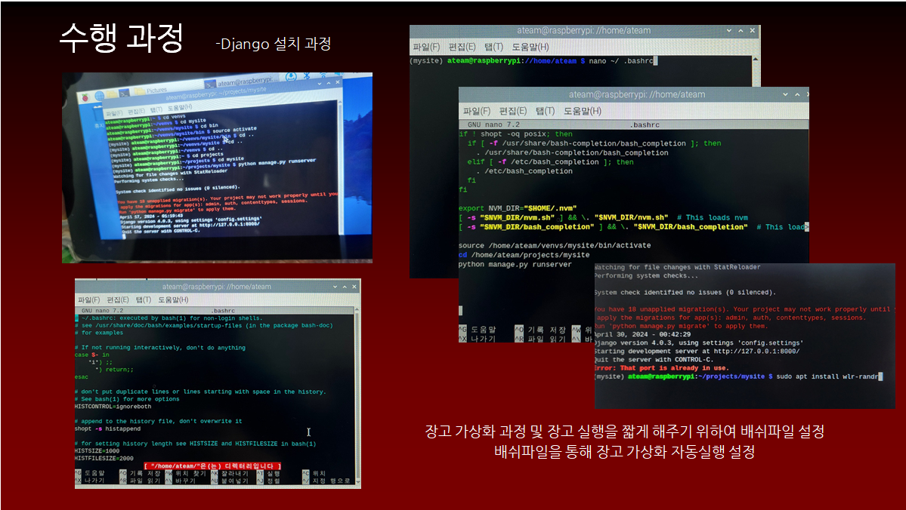

Project


1 / 3
HTML,JavaScript를 활용한 테트리스 게임
HTML을 이용하여 메인 홈페이지를 구축한후 홈페이지에 팀원 4명에서
각각 만든 게임들을 연결하여 통합함.
그중에서 본인은 테트리스를 제작하였으며 그 과정에서 배열에 대한 이해와 boolean(불 논리)의 개념을 좀더 다지는 계기가 되었음.
키보드 이벤트 구현과 더불어 각가지 JavaScript의 함수를 유기적으로 연계하는 개념을 좀더 연습할수 있었음.
그중에서 본인은 테트리스를 제작하였으며 그 과정에서 배열에 대한 이해와 boolean(불 논리)의 개념을 좀더 다지는 계기가 되었음.
키보드 이벤트 구현과 더불어 각가지 JavaScript의 함수를 유기적으로 연계하는 개념을 좀더 연습할수 있었음.
1 / 3
Brity RPA를 이용한 경기도 동물병원 현황 찾기
경기데이터드림 홈페이지에서 경기도 동물병원 csv파일을 다운받고 지역별로 정렬하여
분류한다음 카카오맵 링크를 연결하여 클릭시 화면에 구현되도록 표현
본인은 경기도 지역별로 동물병원 위치를 찾아서 수집한다음 엑셀파일에 하이퍼링크 를 연결하고 클릭시 화면에 구현되는 것을 RPA프로그램으로 자동화하는 역할을 맡음.
RPA라는 다소 생소한 분야에 대해 어느정도 알수있는 계기가 되었으며 RPA에 대해 가지고있던 기존의 생각을 다소 변화하는 전환점이 된 프로젝트였음.
본인은 경기도 지역별로 동물병원 위치를 찾아서 수집한다음 엑셀파일에 하이퍼링크 를 연결하고 클릭시 화면에 구현되는 것을 RPA프로그램으로 자동화하는 역할을 맡음.
RPA라는 다소 생소한 분야에 대해 어느정도 알수있는 계기가 되었으며 RPA에 대해 가지고있던 기존의 생각을 다소 변화하는 전환점이 된 프로젝트였음.
1 / 5
Brity RPA를 이용한 금형사출기 견적계산
기본적으로 제공된 엑셀파일을 이용하여 세부견적서를 계산하기 위한
여러가지 요소들을 직접 엑셀함수로 계산하고 입력하는 과정을 RPA프로그램으로
자동화처리
팀 프로젝트로 이미 해봤던 RPA프로그램을 다시한번 복습해본다는 마인드로 하였고 RPA에 대해 익숙해지면 대부분의 일처리를 편하게 할수있겠다는 생각이 들었다.
팀 프로젝트로 이미 해봤던 RPA프로그램을 다시한번 복습해본다는 마인드로 하였고 RPA에 대해 익숙해지면 대부분의 일처리를 편하게 할수있겠다는 생각이 들었다.
1 / 4
Python Tkinter를 이용한 지하철 노선도 제작
Python의 모듈중 하나인 Tkinter를 이용하여 메인 인터페이스를 구축하고
각각 1호선부터 부산김해선까지 선택살수 있도록 좌측 상단에 세부역까지 버튼을 구현하고
우측 노선도 이미지에도 각각 버튼을 구현하여 검색하기 용이하도록 제작함.
직접 인터페이스를 만들면서 프론트엔드 영역에 대해서 직접적으로 경험해볼수 있는 계기가 되었고 본인도 GUI 개발에 대해서 경험을 해보는 계기가 되었음.
직접 인터페이스를 만들면서 프론트엔드 영역에 대해서 직접적으로 경험해볼수 있는 계기가 되었고 본인도 GUI 개발에 대해서 경험을 해보는 계기가 되었음.


1 / 9
Raspberry Pi와 Django를 이용한 GUI 인터페이스 구현
HTML과 약간의 JavaScript를 이용하여 기본적인 사출금형기 인터페이스를 만든다음
Python의 웹 프레임워크인 Django를 사용하여 웹으로 연결을 한다음 그것을 Raspberry Pi
운영체제를 설치하여 7인치 터치스크린에 연동하여 구동하는 프로젝트.
평소 사용해보지 못했던 Linux의 종류중 하나인 Raspberry Pi를 경험해보며 Linux의 작동방식 에 대해 어느정도 알수있었고 웹 프레임워크중 하나인 Django를 사용해보면서 웹개발의 원리에 대해 어느정도 알아볼수 있는 계기가 되었다.
평소 사용해보지 못했던 Linux의 종류중 하나인 Raspberry Pi를 경험해보며 Linux의 작동방식 에 대해 어느정도 알수있었고 웹 프레임워크중 하나인 Django를 사용해보면서 웹개발의 원리에 대해 어느정도 알아볼수 있는 계기가 되었다.